Trust steers us, moreso than the accuracy and efficiency of algorithmic suggested “place” & direction. Subjective information communicated via one-to-one synchronous interactions with another human far outweighs the transaction of a computational “pull requests” on our internal trust meter.
Columbia GSAPP
M.S. Computational Design Practices
Home → Student Work → Judd Smith
Navigating trust
Dialogical, diabolical, technologically speaking.
Trust is formed through communication— through “talk” that connects two or more persons together through intersubjective ground being ignited into an encounter. If the core function of our mobile technology is to communicate, the current affordances have failed us through focused technical affordances that unfocus our communication, in a sea of passive and heavy strategy-focused engagements.
A to B, A 2 B, A too B, Aye two Bee.
Our attention has been auctioned off into the asynchronous and placeless landscape of digital space through a conglomeration of technical affordances and algorithmic rulesets. I am interested in re-centering our sociality in the physical world through action-based computing.
Techno-optimists portray the screens in our lives as a “remote-for-everything,” but that everything is prioritized within the “screen itself” delivered to us via wherever an algorithm displaces us. What if instead of viewing our mobile computation as a remote, we viewed it as a compass that reorients our attention to an idea, person, or place?
There are many different ways to get from point A to point B — you can drive, you can run, you can roll, you can fly, you can ride a horse. Each of these experiences of navigation afford a different quality of presence and way to experience your surrounding environment.

Much like Apple CarPlay and the Apple Watch, reduced technical affordances combined with advance sensors focused our presence in a way that affords action. I believe a focused usage of the computation systems we carry on our persons everyday can afford a focused local presence as we navigate from point A to point B.
Scaling Trust
Communicating locality and human connection requires a high-resolution in personal micro datasets that express the texture of our human sentience in a way macro-scale datasets can easily miss.
Consider the difference in communicating the textural difference of two destinations — two data points. One from the lens of a Peer,
And the other from a system.
From a Peer, a trusted source,
And crowdsourced, artificial trust, authored by a system. Which do you prioritize?
A “Trusted-Peer” Future.
Now imagine, a world where the computation on our persons behaved as intuitive nodes that afforded the power of serendipity and the chance found in improvisational speech acts steer us.
Imagine walking into a room where those around you are not engrossed in their own pool of information served to them from by a software system, but instead are engaged and aware of their surroundings in an embodied way that allows for the natural serendipitous dialogue between those in different spaces of the world, and are encouraged to engage with others. Instead of running to social media or exchanging and filtering the different aspects of ourselves across personal, professional, and formal means, what if our devices intuitively sent out pings or “community signal” to those around us to foster a deeper sense of connection to our local community?
Judd Smith.
Judd is a multi-disciplinary designer & researcher, focused on the kinetic and systemic power of the “Word” in visual culture (spoken, written, the body’s word). He investigates how the choice-architecture of mobile technology on a technical affordance-level co-opts how we navigate “locality” in our physical world and our interpersonal communication through creating mobile computation hardware systems. “udd has re-envisioned products and authored new platforms as a product designer for organizations like Netflix, Apple, and Verizon, as well as visual systems for Cash App, Nike and Essence. He is currently finishing his Master’s at Columbia University in Computational Design Practices within the Graduate School of Architecture, Planning and Preservation. He approaches design and action from language